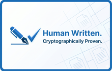

WritingProof for Word
Human Written. Cryptographically Proven.
A Microsoft Word add-in that tracks your writing sessions and generates a tamper-proof cryptographic report — so you can prove every word was written by you.
Why WritingProof?
AI detection tools like Turnitin are generating false positives — flagging genuine human-written work as AI-generated. Students and researchers are facing serious academic consequences for work they actually wrote themselves.
WritingProof gives you the evidence to fight back.
How It Works
📝 Automatically tracks every writing session with timestamps
⌨️ Detects typing vs copy-paste events in real-time
🔐 Generates a SHA-256 cryptographic proof chain
📊 Creates a detailed report with writing speed and session history
📱 Generates a QR code certificate for your thesis or paper
💾 All data stored locally on your device — never shared
Getting Started
Step 1: Install WritingProof from Microsoft AppSource
Step 2: Open any Microsoft Word document — click the WritingProof button in the Home tab to open the panel.
Step 3: Click Start Tracking to begin recording your writing session.
Step 4: Write your document normally. The panel tracks your typing and paste events in real-time.
Step 5: Keep the panel open while writing — tracking pauses if the panel is closed.
Step 6: Click Stop Tracking when finished. Download your proof report as a JSON file.
Step 7: Click Show Report to see your writing statistics, or Generate QR Code to create a certificate.
Perfect For
- University students writing theses or dissertations
- Researchers submitting academic papers
- Anyone falsely flagged by AI detection tools